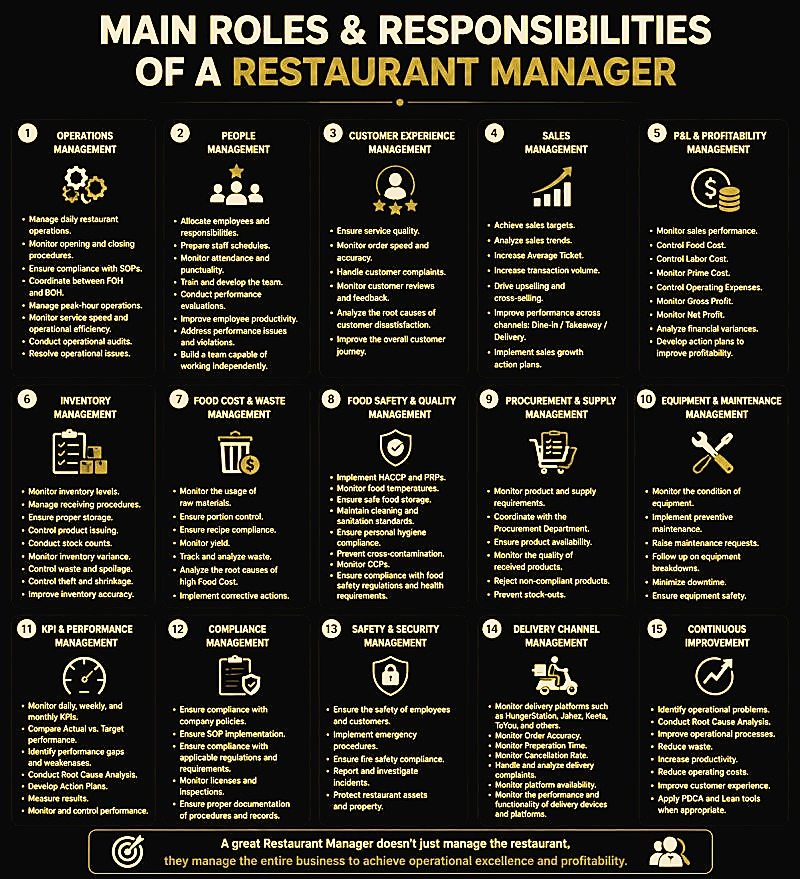

$file = "restaurant-manager-roles-and-responsibilities.html"
$c = Get-Content $file -Raw -Encoding UTF8

$panelMatch = [regex]::Match($c, '<div class="infomatics-panel"[^>]*>(.*?)</div>', 'Singleline')
if ($panelMatch.Success) {
    $panelContent = $panelMatch.Groups[1].Value
} else {
    $panelContent = ''
}

$c = [regex]::Replace($c, '<div class="infomatics-launcher">.*?</div>', '', 'Singleline')
$c = [regex]::Replace($c, '<section class="related-pages".*?</section>', '', 'Singleline')

$newSection = @"
<!-- NT INFOMATICS -->
<div class="nt-infomatics-section" style="margin: 40px 0;">
    <button type="button" class="nt-infomatics-button" data-panel="nt-infomatics-panel-restaurant-manager-roles" aria-expanded="false">
        VIEW INFOMATICS
    </button>
    <div id="nt-infomatics-panel-restaurant-manager-roles" class="nt-infomatics-panel" aria-hidden="true" style="margin-top:20px;">
        $panelContent
        <p style="font-size:0.9em;color:#666;margin-top:10px;text-align:center;">
            💡 Right-click the image to save it.
        </p>
    </div>
</div>
<!-- END NT INFOMATICS -->
"@

$bodyEnd = $c.LastIndexOf('</body>')
if ($bodyEnd -ne -1) {
    $c = $c.Insert($bodyEnd, "`n$newSection`n")
} else {
    $c = $c + "`n$newSection"
}

Copy-Item $file "$file.bak" -Force -ErrorAction SilentlyContinue
Set-Content $file -Value $c -Encoding UTF8 -NoNewline
Write-Host "✅ Converted $file to VIEW INFOMATICS." -ForegroundColor Green
